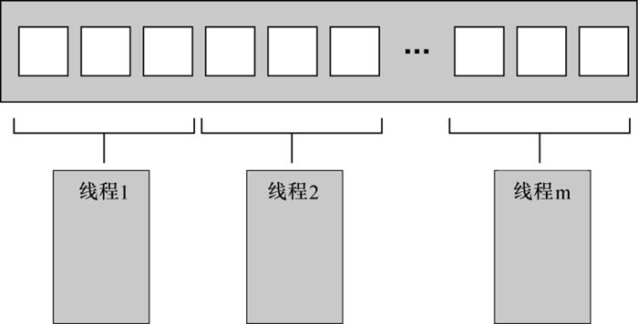
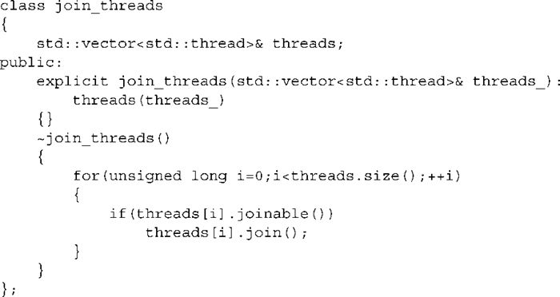
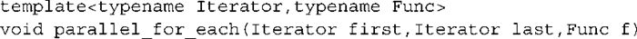

第8章 设计并发代码
本章主要内容
- 在线程间划分数据的技术
- 影响并发代码性能的因素
- 性能因素如何影响数据结构的设计
- 多线程代码中的异常安全
- 可扩展性
- 几个并行算法实现的示例
前面的章节主要是讨论新的C++11工具箱里用来写并行代码的工具。在第6章和第7章中，我们观察了如何使用这些工具来设计多个线程可以并发存取的安全的基础数据结构。作为木匠，为了制作柜橱或者桌子，不仅仅需要知道如何铰链或者接缝处。同样，需要设计并行代码而不仅仅是设计和使用基础数据结构。你需要了解更广泛的背景，这样就可以构造进行有用工作的更大的结构。我将使用一些C++标准库算法的多线程实现作为例子，但是同样的原则适用于应用的所有方面。
正如所有编程项目一样，仔细考虑并行代码是很重要的。尽管如此，使用多线程代码比使用顺序代码需要考虑更多的因素。你不仅需要考虑常见的因素，例如封装，耦合和内聚（在很多软件设计书中有详细的描述），而且需要考虑共享哪些数据，如何同步那些数据的存取，哪个线程需要等待哪些别的线程完成特定操作，等等。
本章，我们将致力于这些问题，从高层次考虑使用多少个线程，各个线程执行哪些代码，以及这些是如何影响代码的透明度。到低层次考虑如何构造共享数据来获得最佳性能。
让我们从在线程间划分工作的技术开始。
8.1 在线程间划分工作的技术
设想你被安排建造一所房子。为了完成这项工作，你需要挖地基、筑墙、布线等。理论上说，你可以在足够的训练下全部自己完成，但是将耗费很多时间，并且会一直切换任务。或者，你可以雇佣别人来帮助你。你只需要选择雇佣多少人并且决定他们需要哪些技能。例如，你可以雇佣一些具有一般技能的人，并且让每个人做所有事。你仍然需要切换任务，但是因为人数更多所以能够更快地完成。
或者，你可以雇佣一些专家。例如，砖匠，木匠，电工和管道工。这些专家只做他们专长的事情，因此如果没有管道工程的时候，管道工就不需要做任何事情。事情会比之前完成得更快，因为有更多的人，并且当电工给厨房布线的时候，管道工可以安装卫生间。但是当专家没有工作的时候就会处于等待状态。即使有空闲时间，你也会发现雇佣专家比雇佣一般技能的人工作进展得更快。专家不需要改变工具，并且他们完成任务比一般人要快。无论这种情况是否取决于特殊情况——你都需要尝试一下。
即使你雇佣专家，你仍然可以选择每种专家的数量。例如，雇佣比电工数量更多的砖匠就很合理。如果你要建造不止一座房子的话，你的队伍的构成以及总体效率都会发生改变。即使管道工在给定的房子上不会有太多的工作，你也可以一次建造很多房子，这样他就会始终有工作了。并且，如果当他们没有工作的时候不需要付钱的话，那么就可以负担更大的团队了，即使同一时间只有相同数量的人在工作。
那么线程需要做哪些呢？同样的问题也适用于线程。你需要决定使用多少线程以及它们需要完成什么任务。你需要决定是使用“通用型”线程来在需要的时候执行操作，还是使用“专家型”线程来做好一件事或一些合作的事。你需要决定无论是为了使用并发性而划分的原因，还是如何去做都会对代码的性能和清晰度产生很大影响。因此理解这些选择是很重要的，这样当设计你的应用中的数据结构的时候，就可以做出合适的决定。在这部分，我们将会看到一些划分任务的方法。在我们做别的工作前先来看看如何在线程间划分数据。
8.1.1 处理开始前在线程间划分数据
最早并行化的算法是简单的算法，如std::for_each
在数据集合中对每个元素进行操作。为了并行化这样的算法，就需要将每个元素划分到一个处理线程中。如何划分元素来得到最优性能在很大程度上决定于数据结构的细节，稍后我们分析性能问题的时候就可以看到了。
划分数据最简单的方法就是将第一个N元素分配给一个线程，将下一个N元素分配给另一个线程，以此类推，正如图8.1所示，但是也可以使用别的模式。无论如何划分数据，每个线程只能处理分配给它的元素，并且直到它完成任务的时候才能与别的线程通信。

图8.1 在线程间划分连续数据块
这种结构与使用消息传递接口（Message Passing Interface, MPI）
[1]
或者OpenMP
[2]
框架编程的结构是类似的。一个任务被分成一个并行任务集，工作的线程独立运行这些任务，并且在最后的化简步骤中合并这些结果。这是2.4节中accumulate
例子使用的方法；在这种情况下，并行任务和最后的步骤都是累加。对一个简单的for_each
来说，最后的步骤是不需要的，因为不需要化简结果。
确定将最后的步骤作为化简步骤是很重要的，清单2.8中的简单实现将执行此化简作为最后的线性步骤。尽管如此，这个步骤也可以并行化。累加过程本身就是化简操作，因此可以修改清单2.8，当线程的数量比线程处理的的最少数据的数量还要多，就可以递归地调用它本身。或者，当每个线程完成它的任务后，工作线程可以执行一些化简操作步骤，而不是每次产一些新线程。
尽管这种方法是很有效的，但是并不适用于所有情况。有时数据不能被事先划分，因为只有当处理数据的时候才知道如何划分。在化简算法例如快速排序中，这种情况更明显。因此需要一个不同的方法。
8.1.2 递归地划分数据
快速排序算法有两个基本步骤，基于其中一个元素（关键值）将数据划分为两部分，一部分在关键值之前，一部分在关键值之后。然后递归地排序这两部分。你无法通过预先划分数据来实行并行，因为只有当处理元素的时候才知道他们属于哪一个“部分”。如果你打算并行这个算法，就需要把握递归的本质。每次递归的时候，会调用更多
的quick_sort
函数来排序关键点之前和关键点之后的元素。这些递归调用是完全相互独立的，因为它们读取完全不同的元素集合。这种划分可以作为我们初步的候选方案。此递归划分如图8.2所示。
图8.2 连续划分数据
在第4章中，有这样一个实现。不仅只是为这两部分执行两个递归调用，你还在每一步都在前一部分使用std::async()
来生成异步任务。通过使用std::async()
，你让C++线程库来决定何时在一个新线程上运行这个任务，以及何时同步运行它们。
当你对很大规模的数据进行排序的时候这是很重要的。为每一个递归调用生成一个新线程会很快产生大量线程。当我们考虑性能的时候，你就会发现如果线程太多的时候，就可能降低了应用。如果数据集很大的时候也可能会用完所有的线程。像这样用递归来划分总体任务的方法是很好的，只需要严格控制线程数量就可以了。在简单情况下，std::async( )就可以处理它，但是这并不是唯一选择。
或者使用std::thread::hardware_concurrency()
函数来选择线程数量，正如清单2.8中accumulate()
的并行版本所做的一样。然后，你只是将此块存储到第6章和第7章描述线程安全栈中，而不是为递归调用创建一个新线程。如果线程不在工作，就说明它已经处理完所有块，或者等待存储在栈中的块。此时可以从栈中得到一个块并将它排序。
清单8.1列出了使用这种方法的简单实现。
清单8.1 使用待排序块栈的并行快速排序
这里，parallel_quick_sort
函数⓳代表了sorter
类➊的大部分功能，提供了一种简单的方法将未排序块➋所在的栈进行分组，以及将线程集➌分组。主要的工作是在do_sort
成员函数➒中完成的，它是用来完成通常的数据排序➓。这次，它将块压入栈中⓫，而不是为一个块产生一个新的线程，并且当你仍然有处理器可以分配的时候就产生一个新进程⓬。因为后一部分可能是被另一个线程处理，你就必须等待它处理完成⓭。为了处理这种情况（即只有一个线程或者别的线程都在工作），你就试图在等待的时候，让这个线程处理栈中的块⓮。try_sort_chunk
只是将一个块出栈➐并且将它排序➑，将结果存储在promise
中，此结果可以被将此块放入栈中的线程取得⓯。
当未设置end_of_data
标志的时候⓱，可以在循环中产生线程将栈中的块先出栈然后排序⓰。在检查的时候，它们让别的线程先对栈进行操作。这段代码依靠sorter
类析构函数➍来结束这些线程。当所有数据都被排序了，就会返回do_sort
（即使线程仍然在运行），因此主线程将从parallel_quici_sort
⓴中返回，并且销毁你的sorter
对象。这就设置了end_of_data
标志位➎并且等待线程结束➏。设置标志位结束了线程函数中的循环⓰。
使用这种方法就不会和使用spawn_task
来产生一个新线程一样导致无穷多个线程这样的问题了，并且不再和std::async()
一样依赖C++线程库来选择线程数量。现在我们将线程数量限制到std::thread::hardware_concurrency()
来避免过多的任务切换。尽管如此，你有另一个潜在的问题，处理这些线程和线程间通信给代码增加了很多复杂性。同时，尽管这些线程在处理不相关的数据元素，它们都访问栈来移入和移出所操作的块。即使使用无锁（因此是无阻塞的）栈，这种竞争会降低性能。你稍后会看到原因。
这种方法是一种特殊版本的线程池——有一个线程集，每个线程处理等待列表中的工作，然后回到线程池。线程池存在的问题（包括列表上的竞争），第9章中有解决这些问题的方法。本章稍后将讨论如何将程序扩展到多处理器上执行（参见8.2.1节）。
在处理开始前划分数据和递归划分数据都是假设数据是固定不变的，然后你寻找划分它的方法，但是情况并不总是这样。如果数据是动态生成的或者是外部输入的，那么这种方法就不行了。在这种情况下，通过任务类型来划分工作比基于数据划分更合适。
8.1.3 以任务类型划分工作
通过给每个线程分配不同数据块在线程间划分工作（无论是事先划分还是处理过程中递归划分）仍然是基于这样的假设，即线程将会基于每个数据块做同样的工作。划分工作的另一种方法是使得线程变得专业化，即每个线程执行不同的任务，就如同建造房子的时候管道工和电工执行不同的任务一样。线程可以基于也可以不基于同样的数据来工作，但是如果基于同样的数据，那也是有不同的目的。
这种划分工作的方式源自于将并发中的关注点分离。每个线程都有不同的任务，并且独立于别的线程来工作。偶尔别的线程可能给它数据或者有触发事件需要处理，但是通常每个线程只做一件事情。这本质上是一个好设计，每块任务都应该只负责一个单一的任务。
1．以任务类型划分工作来分离关注点
当在一段时间内需要持续运行多个任务的时候，或者需要此应用能够及时处理有输入的事件（例如用户键盘输入或者输入网络数据）而不影响别的线程继续执行的时候，单线程应用需要处理与单一任务原则间的矛盾。在单线程环境中，你手工写代码来执行任务A的一部分，执行任务B的一部分，检查键盘输入，检查输入的网络包，然后继续循环执行A的另一部分。这就意味着任务A代码的结束部分会变复杂，因为需要保留它的状态以及周期性地返回控制给主循环。如果你给循环增加了太多任务，运行就会变得很慢，并且使用者会发现键盘输入的响应时间太长。你肯定见过一些应用采取过极端的方式。你设置它处理一些任务，然后接口保持不变直到它完成任务。
这就是线程发生作用的地方。如果你在独立的线程里运行每个任务，操作系统就可以帮你处理这种问题。在任务A的代码中，你可以致力于执行任务，并且不需要担心保留状态以及返回到主循环或者在此之前你花费了多长时间。操作系统将自动地保留状态，然后在适当的时候切换到任务B或C，并且如果系统有多个核或者处理器，任务A和B就可以真正地并行运行。处理键盘输入或者网络包的代码将会运行得很及时，并且皆大欢喜。使用者获得及时响应，你作为开发者可以写更简单的代码，因为每个线程都致力于做与任务直接相关的操作，而不是与控制流和用户互动混合在一起。
看上去这是一个很好的版本。它真的如此吗？如同任何事情一样，它取决于细节。如果每件事情都是独立的，并且线程不需要与另一个线程通信，那么它就确实很简单了。可是，事实却并不是如此。这些后台任务经常做一些用户需要的事情，并且它们需要更新用户接口让用户知道是何时完成这些任务的。或者，用户可能要取消任务，这就会要求用户接口以某种方式给后台任务发送一个消息通知它停止此任务。这两种情况都需要仔细的思考，设计以及适当的同步。但是这些关注点都是分离的。用户接口线程仍然只是处理用户接口，但是当别的线程要求时，它需要更新它的接口。同样，运行后台任务的线程仍然致力于那个任务要求的操作，只有当它的操作是“允许另一个线程停止此任务”。在这两个例子中，线程都不关心该要求是从哪里产生的，只关心它是否是为它们准备的以及与它们的任务是否直接相关。
多个线程关键点分离有两个危害。首先就是你将分离错误的关键点。征兆就是线程间有很多共享数据，或者不同的线程都以等待彼此作为结束。这两种情况都可以归结为线程间有太多的通信。如果发生这种情况，就值得查找产生通信原因。如果所有的通信都与同一件事相关，那么可能那就是单线程的关键任务，并且从所有引用它的线程中获得。或者，如果两个线程彼此之间需要很多通信但是与别的线程通信很少，那么它们就应该联合为一个线程。
当根据任务类型在线程间划分工作的时候，你就不需要局限于完全独立的任务。如果多个数据集合需要应用同样的操作序列，那么就可以划分工作使每个线程执行整个序列中一个步骤。
2．划分线程间的任务序列
如果你的任务是由在很多独立数据项上运行同样的操作序列组成的话，就可以使用管道来开发系统可能的并发性。可以将它类比为管道，数据通过一系列操作（管子）从一端流入，并且从另一端流出。
为了用这种方式划分工作，你在管道的每一个步骤都创造一个独立的线程——序列中的每个操作都有一个线程。当操作完成时，数据元素被放入队列中供下一个线程获得。这就允许当管道中第二个线程在操作第一个元素的时候，第一个线程执行序列中的第一个操作来开始下一个数据元素。
这是仅仅在线程间划分数据的一种替代方法，正如8.1.1节中描述的一样，并且在操作开始时并不知道所有输入数据的情况下是适用的。例如，数据可能是通过网络输入的，或者序列的第一个操作就是扫描一个文件系统来识别要处理的文件。
当序列中的每个操作都消耗时间的时候，管道也可以很好地工作。通过在线程间划分任务而不是数据，你改变了性能概况。假设你要在四核上处理20个数据项，并且每个数据项需要四个步骤，每个步骤需要3秒。如果你在四个线程中划分数据，那么每个线程要处理5个数据项。假设没有别的影响时间的处理，12秒后将处理完4个数据项，24秒后将处理完8个数据项，以此类推。1分钟后将处理完所有的20个数据项。如果使用管道，事情就会不一样了。可以将四个步骤中的每个步骤分配到一个处理核上。现在每个核心都要处理第一个元素，因此需要12秒。实际上，12秒后你只处理完一个数据项，这就没有比数据划分的方法好。但是，一旦管道被使用，处理事情就会变得不一样了。在第一个核心处理完的第一项以后，它接着处理第二项。因此一旦最后一个核处理完第一项，它就可以在第二项上执行它的步骤。现在每3秒都可以处理完一个数据项，而不是在每12秒能处理完一批四个数据项。
处理整个分批会花费更长的时间，因为在最后一个核开始处理第一个数据项之前你需要等待9秒。但是更平滑，更有规律的处理在某些环境下可能会很有效。例如，考虑用来收看高清数字电视的系统。为了使电视是可看的，你至少需要每秒25帧并且更多的帧得到更理想的效果。同样，观看者需要它们被均匀地分开来得到持续活动的印象；一个可以每秒解码100帧的应用是没用的，如果它暂停一秒，然后显示100帧，然后再停一秒，然后显示另一个100帧；另一方面，观看者可能很高兴接受当他们开始观看电视的时候有几秒的延迟。在这种情况下，使用管道以一个更好、更稳定的速度并行输出帧可能会更好。
已经看过在线程间划分工作的一些方法，我们来看看影响多线程系统性能的因素以及它是如何影响你选择的方法的。
8.2 影响并发代码性能的因素
如果要用并发来提高程序在多处理器环境下的性能，我们需要了解哪些因素会影响。哪怕你只是用多线程来进行关注点分离，你需要确保这不会对性能有负面影响。如果你的程序在16核的机器上跑得比在一台老的单核机器上还更慢 ，客户可是不会买账的。
接下来，我们会看到有非常多的因素影响多线程程序的性能——哪怕只是改变下每个线程处理的哪部分 数据（其他都保持不变）都会对性能有巨大的影响。我们先不进一步展开，从看其中一些明显的因素看起，如你的目标机器有多少个处理器？
8.2.1 有多少个处理器？
处理器的数量和结构是多线程程序的性能的首要和关键的因素。有时你在开发时是知道目标硬件，有目标硬件的规格甚至在一样的硬件上开发。有这种条件你算得上是幸运儿了，但是一般情况我们没这种待遇。也许你是在相似的硬件环境下开发，但是其中的差异会很致命。例如，你在2核或4核的系统下开发，而你的客户可能有多核处理器或者多个单核处理器，乃至多个多核处理器。并发程序的行为和性能在这样不同的环境下会有很大的差异。因此你需要仔细考量会有哪些影响并尽可能地进行测试。
简单近似的话，一个16核处理器等价于4个4核处理器或16个单核处理器，因为它们都可以并发执行16个线程。你的程序至少要有16个线程来利用好这些硬件。如果少于16，就会有处理器性能闲置（除非这个机器还在运行其他程序，我们现在忽略这个情形）；另一方面，如果你有多于16个线程要运行（没有阻塞或等待），会浪费处理器的运算力在切换这些线程上（参见第1章）。这种情况一般被称为过度订阅（oversubscription） 。
为了让程序中的线程数量随着硬件能同时运行的线程数量扩展，C++11的标准库提供了std::thread::hardware_concurrency()
。我们已经看过使用它的例子。
直接调用std::thread::hardware_concurrency()
时需要注意，你的程序并没有考虑机器上运行的其他线程，除非你显式地共享这些信息。最坏的情况是，多个线程同时调用std::thread::hardware_concurrency()
会造成严重的过度订阅。而std::async()
会在被调用时，由标准库处理所有这些调用并适当地调度，从而避免这个问题。精心设计的线程池也能避免这个问题。
即使你已经考虑了程序中所有运行的线程，你仍然会被其他同时运行的程序影响。尽管在单用户环境下很少有多个CPU密集型任务同时运行，在某些场景下这种情况会更普遍。为这种应用场景设计的系统一般会提供某种机制来让程序选择合适的线程数，当然这已经不在C++标准内了。一种方法是提供类似std::async()
的调用，在选择线程数量时考量所有程序异步执行的任务数量。另一种是限制给定程序使用的核的数量。我希望在这样的平台上可以用std::thread::hardware_concurrency()
来返回这个数量，不过这取决于具体的系统。如果你需要处理这样的情形，可以去查阅文档了解目标系统提供了哪种方案。
这种情况下随之而来的麻烦是：一个问题的理想算法取决于问题大小和处理单元的数量。如果你在有大量处理单元的大规模并行处理机上运行，耗费操作多的算法可能会比操作少的算法快得多，因为每个处理器只需要处理少量的操作。
随着处理器数量增加，另一个影响性能的问题也出现了，多个处理器访问相同的数据。
8.2.2 数据竞争和乒乓缓存
如果两个线程同时在不同的处理器上运行，它们同时读取 同样的数据通常不会有问题，数据会被复制到各自的缓存，两个处理器都可以继续执行。但是，如果其中一个线程修改 了数据，这个修改需要花费时间传播到另一个处理器的缓存。取决于两个线程的操作和这些操作的内存顺序，这样的修改可能导致第二个处理器停下来等待内存硬件传播对数据的修改。从CPU指令来说，这是个相当于数百条指令的显著 缓慢的操作，具体的时间主要与硬件的物理结构相关。
考虑下面这段简单代码。
这里的counter
是全局的，每个调用processing_loop()
的线程都在修改同一个变量。因此，每次在增加时，处理器必须保证它的缓存中有counter
的最新拷贝、修改，然后发布到其他处理器。即使你用std::memory_order_relaxed
来让编译器不同步其他数据，fetch_add
是一个“读-修改-写”操作，因此需要获取变量最新的值。如果其他处理器上的其他线程在运行同样的代码，counter
的数据就必须在两个处理器之间来回传递来保证每个处理器在增加时都有最新的counter
值。如果do_something()
耗时很少，或者有太多的处理器在运行这段代码，处理器可能会处于互相等待
的状态。一个处理器已经准备好更新这个值，但是另一个处理器已经在做了，这就要等待另一个处理器更新，并且这个改动已经传播完成，这种情况被称为高竞争（highcontention）
。如果处理器很少需要互相等待，则称为低竞争（lowcontention）
。
在这样的循环中，counter
的数据在各处理器的缓存间来回传递。这被称为乒乓缓存（cacheping-pong）
，而且会严重影响程序的性能。如果处理器因为需要等待缓存而被挂起，在这个时间里处理器无法进行任何工作，即使有其他线程等待被执行，这对整个程序来说不是个好消息。
也许你会觉得这不会在自己身上发生，因为不会写这样的循环。但是你能确定吗？如互斥锁，如果你在一个循环中获得一个互斥元，你的代码从数据访问的角度看和上面的代码会非常相像。为了锁住互斥元，另一个线程必须从它所在的处理器获得互斥元并修改。当操作完成后，它又修改互斥元来释放，相关的数据必须传递到下一个需要互斥元的线程所在的处理器。这个传递所需的时间是第二个线程等待第一个线程释放互斥元的额外 时间。
现在是最棘手的部分：如果数据和互斥元被不止一个线程访问，当你添加更多的核和处理器时，你就越可能面临高竞争，处理器需要等待另一个处理器。如果你更快地用多线程来处理同样的数据，这些线程会竞争这些数据，并竞争同一个互斥元。线程数量越多，就越可能同时试图获取互斥元或者访问某个原子变量。
竞争互斥元的影响通常和竞争原子操作不同，因为使用互斥元在操作系统层面将线程串行化，而不是在处理器层面。如果你有足够的线程等待运行，操作系统会在一个线程等待互斥元时调度另一个线程运行。与之相对的是，处理器的挂起会阻止其他线程在这个处理器上运行。但是，这仍然会影响其他竞争这个互斥元的线程的性能，因为它们每次只有一个会被运行。
在第3章，我们看过如何用一个单写入者，多读取者的互斥元保护很少更新的数据结构的例子（参见3.3.2节）。乒乓缓存会使得只用一个互斥元的好处不明显，特别是工作量大的时候。因为所有访问数据的线程（甚至是读取者仍然需要自己去修改互斥元。随着访问数据的处理器数量上升，互斥元本身的竞争也在增加，包含互斥元的缓存线必须在各个核之间传递，导致获取和释放锁的时间不可接受。你可以用一些方法来改善，主要是通过将互斥元分布在多个缓存线，但这就意味着你要自己去实现这样的互斥元，而不能使用系统本身提供的。
如果乒乓缓存效应有害，我们如何避免呢？本章稍后会揭示，解决方法依赖于提高并发度，尽可能地避免两个线程竞争从一个内存位置。不过这并不容易做到，即使一个特定内存区域只有一个线程会去访问，你仍然会遇到乒乓缓存，因为存在假共享（falsesharing） 的问题。
8.2.3 假共享
处理器缓存的最小单位通常不是一个内存地址，而是一小块称为缓存线（cacheline） 的内存。这些内存块一般大小为32～64字节，取决于具体的处理器。缓存只能处理缓存线大小的内存块，相邻地址的数据会被载入同一个缓存线。有时这是好事，线程访问的数据在同一个缓存线比分布在多个缓存线更好。但是如果缓存线内有不相关但需要被别的线程访问的数据，会导致严重的性能问题。
假设你有一个int
型的数组以及一组线程，每个线程都不停访问和改写数组中彼此正交的部分。因为整型的大小通常小于缓存线，数组中的多个元素会出现在同一个缓存线。这样即使线程只访问自己相关的数据，仍然
会有乒乓缓存。一个线程在更改其访问的数据时，缓存线的所有权需要转移到其所在的处理器，而另一个线程所需的数据可能也在这个缓存线上，当它访问时缓存线又要再次转移。这个缓存线是两者共享的，然而其中的数据并不共享，因此被称为假共享（falsesharing）
。这里的解决方案是构造好数据的结构，使得被同一个线程访问的数据在内存中也是相邻的，这样就更可能出现在同一个缓存线，而不同线程访问的数据则分散在内存中，使之更可能地出现在不同的缓存线。本章稍后会介绍如何根据这个要求设计数据和代码。
如果说多个线程访问同一个缓存线有害，那么单个线程访问的数据的内存布局又有什么影响呢？
8.2.4 数据应该多紧密
假共享是由于一个线程访问的数据与另一个线程的靠得太近，而另一个与数据布局直接相关的性能隐患则来自一个线程本身。根源是数据的相邻度。如果线程访问的数据分散在内存中，意味着这些数据分布在各个缓存线上。因此，更多的缓存线需要加载到处理器的缓存中，这会增加内存访问延迟，性能要低于数据分布紧密的情况。
同时，这也会增加线程需要的某个缓存线同时含有其他线程访问的数据的可能性。极端情况下，缓存中无关的数据会多于你关心的数据。这会浪费宝贵的缓存空间，迫使处理器将需要的数据移出缓存来腾出空间，这样更容易缓存未命中而不得不从内存中获取数据。
这对单线程代码的性能很重要，而我们在这里考虑它的原因是任务切换（taskswitching） 。如果有多余CPU核数量的线程，每个核都将运行多个线程。这会增加缓存的压力，因为你要保证不同线程访问不同的缓存线以避免假共享。因此，当处理器切换线程时，数据分散在多个缓存线比每个线程的数据都紧靠在同一个缓存线，更可能需要重载这些缓存线。
如果线程数多于核或者处理器处理，操作系统可能也会选择在一个核上给某个线程分配一个时间片，之后又到另一个核上给这个线程分配时间片。这就需要将这个线程所需的缓存线从第一个核转移到第二个核。需要转移的缓存线越多，消耗的时间也越多。尽管操作系统通常会尽可能避免这种情况，这种现象仍然存在并且一旦发生就会严重影响性能。
任务切换导致的问题在大量线程处于就绪 而不是等待 状态时特别突出。这是我们已经接触过的问题：过度订阅。
8.2.5 过度订阅和过多的任务切换
在多线程的系统中，线程数量通常会多于处理器数量，除非你使用的是大规模并行 处理机。然而，线程经常花时间等待外部I/O操作完成或者因为互斥元而阻塞，又或者在等待一个条件变量等，因此数量多于处理器并不会带来问题。多出的线程可以让程序进行有用的工作而不是使处理器空闲等待。
但是这不总是好事。当你有太多 的线程时，你会有多余可用处理器的就绪 线程，操作系统将会开始频繁的任务切换以保证所有线程享有适当的时间片。我们在第1章看到过，这会增加任务切换的额外开销，并且由于数据没有相邻导致的一系列缓存问题。过度订阅会在以下情况产生：你有任务无限制地生成新的线程，如第4章递归调用的快速排序；或者你根据任务类型分配的线程数量大于处理器的数量，而任务更依赖于CPU而不是I/O。
如果你只是因为划分数据产生了太多的线程，你可以简单的限制工作线程的数量，就像我们在8.1.2节见过的一样。如果过度订阅来自于对任务类型的划分，你就没有什么改进的余地了，这时选择合适的划分也许超出了你对目标平台的知识储备，除非性能无法接受而且能证明对划分的改变确实可以提高性能才值得去做。
其他因素也能影响多线程代码的性能。乒乓缓存的代价在两个单核处理器和一个双核处理器上会有很大的差异，哪怕两个平台的CPU类型和时钟频率都一样。以上都是重要的因素，对性能有显著的影响。现在，让我们了解一下这会如何影响我们代码和数据结构的设计。
8.3 为多线程性能设计数据结构
在8.1节中我们看到了在线程间划分工作的一些方法，在8.2节中我们看到了影响代码性能的一些因素。当设计多线程性能的数据结构的时候如何使用这些信息呢？这是在第6章和第7章中处理的很困难的问题，是关于设计可以安全并行读取的数据结构。正如你在8.2节中看到的一样，即使没有别的线程共享此数据，单个线程使用的数据布局也会对它产生影响。
当为多线程性能设计你的数据结构时需要考虑的关键问题是竞争、假共享以及数据接近。这三个方面都会对性能产生很大影响，并且通常你可以通过改变数据布局或者改变分配给某线程的数据元素来提高性能。首先，我们来看一个简单的例子，在线程间划分数组元素。
8.3.1 为复杂操作划分数组元素
假设你正在做一些复杂的数学计算，你需要将两个大矩阵想乘。为了实现矩阵相乘，你将第一个矩阵的第一行每个元素与第二个矩阵的第一列相对应的每个元素相乘，并将结果相加得到结果矩阵左上角第一个元素。然后你继续将第二行与第一列相乘得到结果矩阵第一列的第二个元素，以此类推。正如图8.3所示，突出显示的部分表明了第一个矩阵的第二行与第二个矩阵的第三列配对，得到结果矩阵的第三列第二行的值。
图8.3 矩阵相乘
为了值得使用多线程来优化该乘法运算，现在我们假设这些都有几千行和几千列的大矩阵。通常，非稀疏矩阵在内存中是用一个大数组表示的，第一行的所有元素后面是第二行的所有元素，以此类推。为了实现矩阵相乘，现在就有三个大数组了。为了获得更优的性能，你就需要注意数据存取部分，特别是第三个数组。
有很多在线程间划分工作的方法。假设你有比处理器更多的行/列，那么你就可以让每个线程计算结果矩阵中某些列的值，或者让每个线程计算结果矩阵中某些行的值，或者甚至让每个线程计算结果矩阵中规则矩形子集的值。
回顾8.2.3节和8.2.4节，你就会发现读取数组中的相邻元素比到处读取数组中的值要好，因为这样减少了缓存使用以及假共享。如果你使每个线程处理一些列，那么就需要读取第一个矩阵中的所有元素以及第二个矩阵中相对应的列中元素，但是你只会得到列元素的值。假设矩阵是用行顺序存储的，这就意味着你从第一行中读取N 个元素，从第二行中读取N 个元素，以此类推（N 的值是你处理的列的数目）。别的线程会读取每一行中别的元素，这就很清楚你应该读取相邻的的列，因此每行的N 个元素就是相邻的，并且最小化了假共享。当然，如果这N 个元素使用的空间与缓存线的数量相等的话，就不会有假共享，因为每个线程都会工作在独立的缓存线上。
另一方面，如果每个线程处理一些行 元素，那么就需要读取第二个矩阵中的所有元素，以及第一个 矩阵中相关的行 元素，但是它只会得到行元素。因为矩阵是用行顺序存储的，因此你现在读取从N 行开始的所有 元素。如果你选择相邻的行，那么就意味着此线程是现在唯一 对这N 行写入的线程；它拥有内存中连续的块，并且不会被别的线程访问。这就比让每个线程处理一些列元素更好，因为唯一可能产生假共享的地方就是一块的最后一些元素与下一个块的开始一些元素。但是值得花时间确认目标结构。
第三种选择—划分为矩形块如何呢？这可以被看做是先划分为列，然后划分为行。它与根据列元素划分一样存在假共享问题。如果你可以选择块的列数目来避免这种问题，那么从读这方面来说，划分为矩形块有这样的优点：你不需要读取任何一个完整的源矩阵。你只需要读取相关的目标矩阵的行与列的值。从具体方面来看，考虑两个1000行和1000列的矩阵相乘。就有一百万个元素。如果你有100个处理器，那么每个线程可以处理10行元素。尽管如此，为了计算这10000个元素，需要读取第二个矩阵的所有元素（一百万个元素）加上第一个矩阵相关行的10000个元素，总计1010000个元素；另一方面，如果每个线程处理100行100列的矩阵块（总计10000个元素），那么它们需要读取第一个矩阵的100行元素（100 x 1000=100000个元素）和第二个矩阵的100列元素（另一个100000个元素）。这就只有200000个元素，将读取的元素数量降低到五分之一。如果你读取更少的元素，那么发生缓存未命中和更好性能的潜力的机会就更少了。
因此将结果矩阵划分为小的方块或者类似方块的矩阵比每个线程完全处理好几行更好。当然，你可以调整运行时每个块的大小，取决于矩阵的大小以及处理器的数量。如果性能很重要，基于目标结构分析各种选择是很重要的。
你也有可能不进行矩阵乘法，那么它是否适用呢？当你在线程间划分大块数据的时候，同样的原则也适用于这种情况。仔细观察数据读取方式，并且识别影响性能的潜在原因。在你遇到的问题也可能有相似的环境，就是只要改变工作划分方式可以提高性能而不需要改变基本算法。
好了，我们已经看到数组读取方式是如何影响性能的。其他数据结构类型呢？
8.3.2 其他数据结构中的数据访问方式
从根本上说，当试图优化别的数据结构的数据访问模式时也是适用的。
- 在线程间改变数据分配，使得相邻的数据被同一个线程适用。
- 最小化任何给定线程需要的数据。
- 确保独立的线程访问的数据相隔足够远来避免假共享。
当然，运用到别的数据结构上是不容易的。例如，二叉树本来就很难用任何方式来再分，有用还是没用，取决于树是如何平衡的以及你需要将它划分为多少个部分。同样，树的本质意味着结点是动态分配的，并且最后在堆上不同地方。
现在，使数据最后在堆上不同地方本身不是一个特别的问题，但是这意味着处理器需要在缓存中保持更多东西。实际上这可以很有利。如果多个线程需要遍历树，那么它们都需要读取树的结点，但是如果树的结点至包含指向该结点持有数据的指针，那么当需要的时候，处理器就必须从内存中载入数据。如果线程正在修改需要的数据，这就可以避免结点数据与提供树结构的数据间的假共享带来的性能损失。
使用互斥元保护数据的时候也有同样的问题。假设你有一个简单的类，它包含一些数据项和一个互斥元来保护多线程读取。如果互斥元和数据项在内存中离得很近，对于使用此互斥元的线程来说就很好；它需要的数据已经在处理器缓存中了，因为为了修改互斥元已经将它载入了。但是它也有一个缺点：当第一个线程持有互斥元的时候，如果别的线程试图锁住互斥元，它们就需要读取内存。互斥元的锁通常作为一个在互斥元内的存储单元上试图获取互斥元的读—修改—写原子操作来实现的，如果互斥元已经被锁的话，就接着调用操作系统内核。这个读—修改—写操作可能导致拥有互斥元的线程持有的缓存中的数据变得无效。只要使用互斥元，这就不是问题。尽管如此，如果互斥元和线程使用的数据共享同一个缓冲线，那么拥有此互斥元的线程的性能就会因为另一个线程试图锁住该互斥元而受到影响。
测试这种假共享是否是一个问题的方法就是在数据元素间增加可以被不同的线程并发读取的大块填充数据。例如，你可以使用：
来测试互斥元竞争问题或者使用：
来测试数组数据是否假共享。如果这样做提高了性能，就可以得知假共享确实是一个问题，并且你可以保留填充数据或者通过重新安排数据读取的方式来消除假共享。
当然，当设计并发性的时候，不仅需要考虑数据读取模式，因此让我们来看看别的需要考虑的方面。
8.4 为并发设计时的额外考虑
本章我们看了一些在线程间划分工作的方法，影响性能的因素，以及这些因素是如何影响你选择哪种数据读取模式和数据结构的。但是，设计并发代码需要考虑更多。你需要考虑的事情例如异常安全以及可扩展性。如果当系统中处理核心增加时性能（无论是从减少执行时间还是从增加吞吐量方面来说）也增加的话，那么代码就是可扩展的。从理论上说，性能增加是线性的。因此一个有100个处理器的系统的性能比只有一个处理器的系统好100倍。
即使代码不是可扩展的，它也可以工作。例如，单线程应用不是可扩展的，异常安全是与正确性有关的。如果你的代码不是异常安全的，就可能会以破碎的不变量或者竞争条件结束，或者你的应用可能因为一个操作抛出异常而突然终止。考虑到这些，我们将首先考虑异常安全。
8.4.1 并行算法中的异常安全
异常安全是好的C++代码的一个基本方面，使用并发性的代码也不例外。实际上，并行算法通常比普通线性算法需要你考虑更多关于异常方面的问题。如果线性算法中的操作抛出异常，该算法只要考虑确保它能够处理好以避免资源泄漏和破碎的不变量。它可以允许扩大异常给调用者来处理。相比之下，在并行算法中，很多操作在不同的线程上运行。在这种情况下，就不允许扩大异常了，因为它在错误的调用栈中。如果一个函数大量产生以异常结束的新线程，那么该应用就会被终止。
作为一个具体的例子，我们来回顾清单2.8中的parallel_accumulate
函数，清单8.2中会做一些修改。
清单8.2 std::accumulate的并行版本（来自清单2.8）
现在我们检查并且确定抛出异常的位置：总的说来，任何调用函数的地方或者在用户定义的类型上执行操作的地方都可能抛出异常。
首先，你调用distance
❷，它在用户定义的迭代器类型上执行操作。因为你还没有进行任何工作，并且这是在调用线程上，所以这是没问题的。下一步，你分配了results
迭代器❸和threads
迭代器❹。同样，这是在调用线程上，并且你没有做任何工作或者生产任何线程，因此这是没问题的。当然，如果threads
构造函数抛出异常，那么就必须清楚为results
分配的内存，析构函数将为你完成它。
跳过block_start
的初始化❺因为这是安全的，就到了产生线程的循环中的操作❻、❼、❽。一旦在❼中创造了第一个线程，如果抛出异常的话就会很麻烦，你的新std::thread
对象的析构函数会调用std::terminate
然后中止程序。
调用accumulate_block
❾也可能会抛出异常，你的线程对象将被销毁并且调用std::terminate
；另一方面，最后调用std::accumulate
❿的时候也可能抛出异常并且不导致任何困难，因为所有线程将在此处汇合。
这不是对于主线程来说的，但是也可能抛出异常，在新线程上调用accumulate_block
可能抛出异常❶。这里没有任何catch
块，因此该异常将被稍后处理并且导致库调用std::terminate()
来中止程序。
即使不是显而易见的，这段代码也不是异常安全的。
1．增加异常安全性
好了，我们识别出了所有可能抛出异常的地方以及异常所造成的不好影响。那么如何处理它呢？我们先来解决在新线程上抛出异常的问题。
在第4章中介绍了完成此工作的工具。如果你仔细考虑在新线程中想获得什么，那么很明显当允许代码抛出异常的时候，你试图计算结果来返回。std::packaged_task
和std::future
的组合设计是恰好的。如果你重新设计代码来使用std::packaged_task
，就以清单8.3中的代码结束。
清单8.3 使用std::packaged_task的std::accumulate的并行版本
第一个改变就是，函数调用accumulate_block
操作直接返回结果，而不是返回存储地址的引用❶。你使用std::packaged_task
和std::future
来保证异常安全，因此你也可以使用它来转移结果。这就需要你调用std::accumulate
❷明确使用默认构造函数T而不是重新使用提供的result值，不过这只是一个小小的改变。
下一个改变就是你用futures
向量❸，而不是用结果为每个生成的线程存储一个std::future<T>
。在生成线程的循环中，你首先为accumulate_block
创造一个任务❹。std::packaged_task<T(Iterator,Iterator)>
声明了有两个Iterator
并且返回一个T
的任务，这就是你的函数所做的。然后你将得到任务的future❺，并且在一个新的线程上运行这个任务，输入要处理的块的起点和终点❻。当运行任务的时候，将在future中捕捉结果，也会捕捉任何抛出的异常。
既然你已经使用了future，就不再有结果数组了，因此必须将最后一块的结果存储在一个变量中❼而不是存储在数组的一个位置中。同样，因为你将从future中得到值，使用基本的for
循环比使用std::accumulate
要简单，以提供的初始值开始❽，并且将每个future的结果累加起来❾。如果相应的任务抛出异常，就会在future中捕捉到并且调用get()
时会再次抛出异常。最后，在返回总的结果给调用者之前要加上最后一个块的结果❿。
因此，这就去除了一个可能的问题，工作线程中抛出的异常会在主线程中再次被抛出。如果多于一个工作线程抛出异常，只有一个异常会被传播，但是这也不是一个大问题。如果确实有关的话，可以使用类似std::nested_exception
来捕捉所有的异常然后抛出它。
如果在你产生第一个线程和你加入它们之间抛出异常的话，那么剩下的问题就是线程泄漏。最简单的方法就是捕获所有异常，并且将它们融合到调用joinable()
的线程中，然后再次抛出异常。

现在它起作用了。所有线程将被联合起来，无论代码是如何离开块的。尽管如此，try-catch
块是令人讨厌的，并且你有复制代码。你将加入正常的控制流以及捕获块的线程中。复制代码不是一个好事情，因为这意味着需要改变更多的地方。我们在一个对象的析构函数中检查它，毕竟，这是C++中惯用的清除资源的方法。下面是你的类。

这与清单2.3中的thread_guard
类是相似的，除了它扩展为适合所有线程。你可以如清单8.4所示简化代码。
清单8.4 std::accumulate的异常安全并行版本
一旦你创建了你的线程容器，也就创建了一个新类的实例❶来加入所有在退出的线程。你可以去除你的联合循环，只要你知道无论函数是否退出，这些线程都将被联合起来。注意调用futures[i].get()
❷将被阻塞直到结果出来，因此在这一点并不需要明确地与线程融合起来。这与清单8.2中的原型不一样，在清单8.2中你必须与线程联合起来确保正确复制了结果向量。你不仅得到了异常安全代码，而且你的函数也更短了，因为将联合代码提取到你的新（可再用的）类中了。
2．STD::ASYNC()的异常安全
你已经知道了当处理线程时需要什么来实现异常安全，我们来看看使用std::async()
时需要做的同样的事情。你已经看到了，在这种情况下库为你处理这些线程，并且当future是就绪
的时候，产生的任何线程都完成了。需要注意到关键事情就是异常安全，如果销毁future的时候没有等待它，析构函数将等待线程完成。这就避免了仍然在执行以及持有数据引用的泄漏线程的问题。清单8.5所示就是使用std::async()
的异常安全实现。
清单8.5 使用std::async的std::accumulate的异常安全并行版本
这个版本使用递归将数据划分为块而不是重新计算将数据划分为块，但是它比之前的版本要简单一些，并且是异常安全
的。如以前一样，你以计算序列长度开始❶，如果它比最大的块尺寸小的话，就直接调用std::accumulate
❷。如果它的元素比块尺寸大的话，就找到中点❸然后产生一个异步任务来处理前半部分![序号❹。范围内的第二部分就用一个直接的递归调用来处理❺，然后将这两个块的结果累加❻。库确保了std::async
调用使用了可获得的硬件线程，并且没有创造很多线程。一些“异步”调用将在调用get()
的时候被异步执行❻。
这种做法的好处在于它不仅可以利用硬件并发，而且它也是异常安全的。如果递归调用抛出异常❺，当异常传播时，调用std::async
❹创造的future就会被销毁。它会轮流等待异步线程结束，因此避免了悬挂线程。另一方面，如果异步调用抛出异常，就会被future捕捉，并且调用get()
❻将再次抛出异常。
当设计并发代码的时候还需要考虑哪些方面呢？让我们来看看可扩展性 。如果将你的代码迁移到更多处理器系统中会提高多少性能呢？
8.4.2 可扩展性和阿姆达尔定律
可扩展性 是关于确保你的应用可以利用系统中增加的处理器。一种极端情况就是你有一个完全不能扩展的单线程应用，即使你在系统中增加100个处理器也不会改变性能。另一种极端情况是你有类似SETI@Home [3] 的项目，被设计用来利用成千上万的附加的处理器（以用户将个人计算机增加到网络中的形式）。
对于任何给定的多线程程序，当程序运行时，执行有用工作的线程的数量会发生变化。即使每个线程都在做有用的操作，初始化应用的时候可能只有一个线程，然后就有一个任务生成其他的线程。但是即使那样也是一个不太可能发生的方案。线程经常花时间等待彼此或者等待I/O操作完成。
除非每次线程等待事情（无论是什么事情）的时候都有另一个线程在处理器上代替它，否则就有一个可以进行有用工作的处理器处于闲置状态。
一种简单的方法就是将程序划分为只有一个线程在做有用的工作“串行的”部分和所有可以获得的处理器都在做有用工作的“并行的”部分。如果你在有更多处理器的系统上运行你的应用，理论上就可以更快地完成“并行”部分，因为可以在更多的处理器间划分工作，但是“串行的”部分仍然是串行的。在这样一种简单假设下，你可以通过增加处理器数量来估计可以获得的性能。如果“连续的”部分组成程序的一个部分 ，那么使用N 个处理器获得的性能P 就可以估计为
这就是阿姆达尔定律（Amdahl’slaw） ，当谈论并发代码性能的时候经常被引用。如果所有事情都能被并行，那么串行部分就为0，加速就是N 。或者，如果串行部分是三分之一，即使有无限多的处理器，你也不会得到超过3的加速。
尽管如此，这是一种很理想的情况。因为任务很少可以像方程式所需要的那样被无穷划分，并且所有事情都达到它所假设的CPU界限是很少出现的。正如你看到的，线程执行的时候会等待很多事情。
阿姆达尔定律中有一点是明确的，那就是当你为性能使用并发的时候，值得考虑总体应用的设计来最大化并发的可能性，并且确保处理器始终有有用的工作来完成。如果你可以减少“串行”部分或者减少线程等待的可能性，你就可以提高在有更多处理器的系统上的性能。或者，如果你可以为系统提供更多的数据，并且保持并行部分准备工作，就可以减少串行部分，增加性能P 的值。
从根本上说，可扩展性就是当增加更多的处理器的时候，可以减少它执行操作的时间或者增加在一段时间内处理的数据数量。有时这两点是相同的（如果每个元素可以处理得更快，那么你就可以处理更多数据），但是并不总是一样的。在选择在线程间划分工作的方法之前，识别出可扩展性的哪些方面对你很重要是很必要的。
在这部分的开始我就提到过线程并不是总有有用的工作来做。有时它们必须等待别的线程，或者等待I/O操作完成，或者别的事情。如果在等待中你给系统一些有用的事情，你就可以有效的“隐藏”等待。
8.4.3 用多线程隐藏延迟
在很多关于多线程代码性能的讨论中，我们都假设当它们真正在处理器上运行时，线程在“全力以赴”的运行并且总是有有用的工作来做。这当然不是正确的，在应用代码中，线程在等待的时候总是频繁地被阻塞。例如，它们可能在等待一些I/O操作的完成，等待获得互斥元，等待另一个线程完成一些操作并且通知一个条件变量，或者只是休眠一段时间。
无论等待的原因是什么，如果你只有和系统中物理处理单元一样多的线程，那么有阻塞的线程就意味着你在浪费CPU时间。运行一个被阻塞的线程的处理器不做任何事情。因此，如果你知道一个线程将会有相当一部分时间在等待，那么你就可以通过运行一个或多个附加线程来使用那个空闲的CPU时间。
考虑一个病毒扫描应用，它使用管道在线程间划分工作。第一个线程搜索文件系统来检查文件并且将它们放到队列中。同时，另一个线程获得队列中的文件名，载入文件，并且扫描它们的病毒。你知道搜索文件系统的文件来扫描的线程肯定会达到I/O界限，因此你就可以通过运行一个附加的扫描线程来使用“空闲的”CPU时间。那么你就有一个搜索文件线程，以及与系统中的物理核或者处理器相同数量的扫描线程。因为扫描线程可能也不得不从磁盘读取文件的重要部分来扫描它们，拥有更多扫描线程也是很有意义的。但是在某个时刻会有太多线程，系统会再次慢下来因为它花了更多时间切换程序，正如8.2.5节所描述的。
仍然，这是一个最优化问题，因此测量线程数量改变前后的性能时很重要的；最有的线程数量将很大程度上取决于工作的性质和线程等待的时间所占的比例。
取决于应用，它也可能用完空闲的CPU时间而没有运行附加的线程。例如，如果一个线程因为等待I/O操作的完成而被阻塞，那么使用可获得的异步I/O操作就很有意义了。那么当在背后执行I/O操作的时候，线程就可以执行别的有用的工作了。在别的情况下，如果一个线程在等待另一个线程执行一个操作，那么等待的线程就可以自己执行那个操作而不是被阻塞，正如第7章中的无锁队列。在一个极端的情况下，如果线程等待完成一个任务并且该任务没有被其他线程执行，等待的线程可以在它内部或者另一个未完成的任务中执行这个任务。清单8.1中你看到了这个例子，在排序程序中只要它需要的块没有排好序就不停地排序它。
有时它增加线程来确保外部事件及时被处理来增加系统响应性，而不是增加线程来确保所有可得到的处理器都被应用了。
8.4.4 用并发提高响应性
很多现代图形用户接口框架是事件驱动的，使用者通过键盘输入或者移动鼠标在用户接口上执行操作，这会产生一系列的事件或者消息，稍后应用就会处理它。系统自己也会产生消息或者事件。为了确保所有事件和消息都能被正确处理，通常应用都有下面所示的一个事件循环。
显然，API的细节是不同的，但是结构通常是一样的，等待一个事件，做需要的操作来处理它，然后等待下一个事件。如果你有单线程应用，就会导致长时间运行的任务很难被写入，如8.1.3节描述的。为了确保用户输入能被及时处理，get_event()
和process()
必须以合理的频率被调用，无论应用在做什么操作。这就意味着要么任务必须定期暂停并且将控制交给事件循环，要么方便的时候在代码中调用get_event()
/process()
代码。每一种选择都将任务的实现变得复杂了。
通过用并发分离关注点，你就可以将长任务在一个新线程上执行，并且用一个专用的GUI线程来处理事件。线程可以通过简单的方法互相访问，而不是必须以某种方式将事件处理代码放到任务代码中。清单8.6列出了这种分离的简单概括。
清单8.6 从任务线程中分离GUI线程
通过这种方式分离障碍，用户线程能够及时地响应事件，即使任务要执行很长时间。这种响应性通常是使用应用时用户体验的关键。无论何时执行一个特定操作（无论该操作是什么），应用都会被完全锁住，这样使用起来就不方便了。通过提供一个专用的事件处理线程，GUI可以处理GUI特有的消息（例如调整窗口大小或者重画窗口）而不会中断耗时处理的执行，并且当它们确实影响长任务时会传递相关的消息。
本章你看到了设计并发代码的时候需要考虑的问题。就整体而言，这些问题是很大的，但是当你习惯了“多线程编程”，它们就会变得得心应手了。如果这些考虑对你来说很新，那么希望当你看到它们是如何影响多线程代码的具体例子的时候，可以变得更清晰。
8.5 在实践中设计并发代码
当为一个特别的任务设计并发代码的时候，你需要事先考虑每个描述的问题的程度将取决于任务。为了演示它们是如何应用的，我们将看看C++标准库中三个函数并行版本的实现。这将给你一个类似的构造基础，提供了考虑问题的平台。作为奖励，我们也有可用的函数实现，可用来帮助并行一个更大的任务。
我选择这些实现主要是用来演示特别的方法而不是成为最高水平的实现。在并行算法学术文献或者在多线程库例如Inter’s Threading Building Blocks [4] 中可以找到更高程度的实现，它们更好地利用了可获得的硬件并发性。
概念上最简单的并行算法是std::for_each
的并行版本，我们就先从它 开始。
8.5.1 std::for_each的并行实现
std::for_each
在概念上很简单，它轮流在范围内的每个元素上调用用户提供的函数。std::for_each
的并行实现和串行实现的最大区别就是函数调用的顺序。std::for_each
用范围内的第一个元素调用函数，然后是第二个，以此类推。然而使用并行实现就不能保证元素被处理的顺序，它们可能（实际上我们希望）被并发处理。
为了实现并行版本，你只需要将这个范围划分为元素集合在每个线程上处理。你事先知道了元素数量，因此你可以在处理开始前划分数据（参见8.1.1节）。我们假设这是唯一在运行的并行任务，那么就可以使用std::thread::hardware_ concurrency()
来决定线程的数量。你也知道元素可以被独立地处理，因此你可以使用临近的块来避免假共享（参见8.2.3节）。
这个算法与8.4.1节中描述的std::accumulate
的并行版本在概念上是类似的，但是不计算每个元素的和，你只要应用具体函数。尽管你可能推测这会大大简化代码，因为它不返回结果。如果你想传递异常给调用者，你仍然需要使用std::packaged_task
和std::future
方法在线程间传递异常。一个简单的实现如清单8.7所示。
清单8.7 std::for_each的并行版本

这段代码的基础结构与清单8.4中的代码是一样的。关键的不同之处在于futures
向量存储了std::future<void>
❶，因为工作线程不返回值，并且在这个任务上使用一个简单lambda函数激活了从block_start
到block_end
范围上的函数f
❷。这就避免了将范围传递给线程构造函数❸。因为工作线程不返回值，调用future[i].get()
❹只提供取回工作线程抛出的异常的方法，如果你不希望传递异常，那么你就可以省略它。
正如你的std::accumulate
的并行实现可以通过使用std::async
被简化，因此你的parallel_for_each
也可以被简化。它的实现如清单8.8所示。
清单8.8 使用std::async的std::for_each的并行版本
如同清单8.5中基于std::async
的parallel_accumulat
e一样，你递归地划分数据而不是在执行前划分数据，因为你不知道库会使用多少线程。如以前一样，每一步都将数据划分为两部分，异步运行前半部分❷并且直接运行后半部分❸直到剩下的数据太小而不值得划分，在这种情况下会调用std::for_each
❶。使用std::async
和get()
成员函数std::future
❹提供了异常传播语义。
让我们从必须在每个元素上执行相同操作的算法转移到稍微复杂的例子std::find
。
8.5.2 std::find的并行实现
std::find
是下一个考虑的有用的算法，因为它是不用处理完所有元素就可以完成的几个算法之一。例如，如果范围内的第一个元素符合搜索准则，那么就不需要检查别的元素。稍后你将看到，这是性能的一个重要属性，并且对设计并行实现有直接影响。这是数据读取部分可能影响代码设计的一个特殊例子（参见8.3.2节）。这类别的算法包括std::equal
和std::any_of
。
如果你和你的妻子或者搭档在阁楼的两箱纪念品中寻找一张旧相片，如果你找到了相片就应该让他们也停止寻找。你要让他们知道你已经找到了相片（可以通过呼喊，“找到了”），这样他们就可以停止寻找并且做别的事情。很多算法的天性是处理每个元素，因此它们没有呼喊“找到了”。对于算法例如std::find
，早日完成的能力是一个重要的特性并且不浪费任何事情。因此你需要设计你的代码来使用这个特性——当知道结果的时候用一些方式中断别的任务，因此代码不需要等待别的工作线程处理剩下的元素。
如果你不中断别的线程，串行版本比并行版本的性能更好，因为串行算法一旦找到匹配项就停止搜索并且返回。例如，如果系统可以支持四个并发线程，每个线程将检查范围内四分之一的元素，并且我们的并行算法大约花费单个线程四分之一的时间来检查每个元素。如果匹配的元素位于范围内的前四分之一，串行算法会首先返回，因为它不需要检查剩下的元素。
你可以中断别的线程，一种方法是通过使用一个原子变量作为一个标志，并且在处理完每个元素后检查这个标志。如果设置了标志，就代表有一个线程发现了匹配项，因此就可以终止执行并且返回了。用这种方法中断别的线程，你保持了你不需要处理每个值的特性，因此在更多的情况下与串行版本相比提高了性能。这种方法的缺点是原子载入变成慢动作，这就会妨碍每个线程的前进。
关于如何返回值和如何传递异常你有两个选择。你可以使用future数组，使用std::packaged_task
来转移值和异常，然后在主线程中处理返回的结果；或者你使用std::promise
来从工作线程中直接设置最终结果。如果你希望在第一个异常处停止（即使你没有处理完所有元素），你可以使用std::promise
来设置值和异常。另一方面，如果你希望允许别的工作线程继续搜索，你可以使用std::packaged_task
，存储所有的异常，那么没有发现匹配项的时候就重新抛出其中之一。
在这种情况下，我选择使用std::promise
，因为行为更匹配std::find
。这里要注意的一件事情就是要搜索的元素不在提供的范围内。因此在从future得到结果之前
你需要等待所有线程结束。如果你在future上阻塞了并且没有这个值的话，你就会永远等待。结果如清单8.9所示。
清单8.9 并行find算法的一种实现
清单8.9的主函数与之前的例子很相似。这次，在本地find_element
类的函数调用操作上完成工作➊。这个循环访问给定的块的每个元素，每一步都检查标志➋。如果找到匹配项，就在promise
中设置最后的结果➌并且在返回前设置done_flag
➍。
如果抛出异常，就可以被捕获➎，并且在设置done_flag
前在promise
中存储异常➏。如果promise
已经被设置了，再设置值就有可能抛出异常，因此你捕获并且抛弃发生在这里的异常➐。
这就意味着如果一个线程调用find_element
，要么找到匹配项要么抛出异常，此时所有别的线程都会看到done_flag
被设置了并且停止执行。如果多个线程同时找到匹配项或者抛出异常，它们就会在设置promise
值的时候产生竞争。但是这是一个没有危害的竞争条件，无论哪一个线程成功都会成为名义上的“第一个”并且是一个可接受的结果。
回顾主函数parallel_find
本身，你用promise
➑和flag
➒来停止搜索，这两者都传递给在这个范围内搜索的新线程⓫。主线程也使用find_element
来搜索剩下的元素⓬。我们已经说过，你在检查结果之前需要等待所有线程结束，因为可能没有匹配的元素。你通过在块中附入线程连接的代码来完成➓，因此当你检查标志来看看是否发现匹配项的时候，所有线程都被联合起来了⓭。如果发现匹配项，你就可以通过在std::future<iterator>
中调用get()
得到结果或者抛出存储的异常⓮。
同样，这个实现假设你将使用所有可获得的硬件线程或者你有别的方法来决定线程数量，用来提前在线程间划分工作。跟以前一样，在使用C++标准库的自动扩展功能的时候，你可以使用std::async
和递归数据划分来简化你的实现。使用std::async
的parallel_find
实现如清单8.10所示。
清单8.10 使用std::async的并行查找算法的实现
如果你找到匹配项就结束查找，意味着你需要引入一个在线程间共享的标志，用来表示已经找到该匹配项。因此这就需要传递给所有递归调用。实现它最简单的方法就是通过在实现函数上➊附加参数——引用done
标志，这是从主入口点传递进来的⓬。
核心实现在类似的代码行里继续执行。与很多实现相同，你在单线程上设置处理项的最小值➋。如果你不能将它划分为都至少达到设置的大小的两部分，就在当前线程上运行所有的事情➌。实际算法是处理具体范围的简单循环，一直循环直到范围结束或者设置了done
标志➍。如果你查找到匹配项，就在返回前设置done
标志➎。如果你停止查找，要么因为你已经到达范围的末端，要么因为另一个线程设置了done
标志。你返回last
用来表示在这里没有匹配项➏。
如果范围可以被划分，你在使用std::async
前首先发现中点➐，以便在范围的后半部分进行查找➑，小心使用std::ref
来传递done
标志的引用。同时，你可以通过直接递归调用在范围的前半部分进行查找➒。如果原来的范围太大的话，这个异步调用和直接递归可能导致进一步的划分。
如果直接搜索返回mid_point
，那么就没有找到匹配项，你就需要得到异步搜索的结果。如果那部分没有发现结果，结果就将是last
，这是正确的返回值表明没有查找到这个值➓。如果“异步的”调用被延迟而不是真正的异步，它在调用get()
的时候才真正运行，在这种情况下，如果在后半部分查找到了就跳过搜索范围的前半部分。如果异步搜索已经在另一个线程上运行了，async_result
变量的析构函数将等待线程完成。这样就不会有任何泄露线程。
如同以前一样，使用std::async
提供了异常安全和异常传递特性。如果直接递归抛出异常，future的析构函数将确保运行异步调用的线程在函数返回前就结束了。并且如果异步调用抛出异常，这个异常就通过get()
调用传递➓。使用一个try/catch
块是为了在异常上设置done
标志并且确保如果抛出异常的话所有线程很快终止⓫。没有它，实现仍然是正确的，但是会继续检查元素直到每个线程都结束了。
这个算法的两种实现与另一种并行算法共享的主要特点就是不再保证项目按照从std::find
得到的顺序来处理。如果你想并行算法这一点是很基础的。如果顺序很重要的话，你就不能并发处理元素。如果元素是独立的，就可以使用parallel_for_each
。但是这意味着你的parallel_find
可能返回范围尾部的元素，即使它与范围头部的元素匹配。
好了，你已经处理了并行化std::find
。正如我在这一节开头说的那样，存在别的类似算法可以在不处理每个数据元素的情况下完成，并且可以使用同样的方法。我们将在第9章中进一步讨论中断线程的问题。
为了完成我们的例子，我们将从不同的方面来考虑并且看看std::partial_sum
。这个算法是一个很有趣的并行算法并且强调了一些附加的设计选择。
8.5.3 std::partial_sum的并行实现
std::partial_sum
计算了一个范围内的总和，因此每个元素都被这个元素与它之前的所有元素的和所代替。所以序列1、2、3、4、5就变成1、(1+2)=3、(1+2+3)=6、(1+2+3+4)=10、(1+2+3+4+5)=15。它的并行化是很有趣的，因为你不能将范围划分为块然后单独计算每个块。例如，第一个元素的原始值需要加到每一个别的元素上。
一种用来决定范围内部分和的方法就是计算独立块的部分和，然后将第一个块中计算得到的最后一个元素的值加到下一个块的元素中，并以此类推。如果你有元素1,2,3,4,5,6,7,8,9并且你将它分成三个块，首先你得到{1,3,6}、{4,9,15}、{7,15,24}。如果你将6加到第二个块的所有元素上，你就得到{1,3,6}、{10,15,21}、{7,15,24}。然后你将第二个块的最后一个元素{21}加到第三个块的元素上，这样最后一个块得到最后的值：{1,3,6}、{10,15,21}、{28,36,55}。
同原始划分成块一样，也可以并行加上前一个块的部分和。如果每个块的最后一个元素首先被更新，那么当第二个线程更新下一个块的时候，第一个线程可以更新这个块中剩下的元素，并且以此类推。当列表中的元素多于处理核的时候，这种方法很有效，因为每个核每一步都要处理大量元素。
如果你有很多处理核（同元素数量一样，或者多于元素数量），这种方法就不是很有效了。如果你在处理器间划分工作，第一步以元素对结束工作。这这种条件下，这种进一步传递结果意味着很多处理器会等待，因此你需要给它们分配工作。你可以采用另一种方法对待这个问题。你做部分传递，而不是从一个块到下一个块做全部和的传递。首先像之前一样求和相邻的元素，然后将这些和加到与它相隔两个的元素上，然后再将得到的值加到与它相隔四个的元素上，以此类推。如果你以同样的九个元素开始，第一轮后你得到1,3,5,7,9,11,13,15,17，这就得到前两个元素最后的值。第二轮后你得到1,3,6,10,14,18,22,26,30，它的前四个元素是正确的。第三轮后你得到1,3,6,10,15,21,18,36,44，它的前八个元素是正确的。第四轮后你得到1,3,6,10,15,21,18,36,45，这就是最终答案。尽管它比第一种方法的总步骤数要多，但是如果你有很多线程的话，它有更大的余地来并行化，每个处理器每一步都能更新一个入口。
总的说来，第二种方法执行log2 (N )个步骤，每一个步骤执行大约N 个操作（每个线程处理一个），其中N 是表中的元素数量。第一种算法中，每个线程为分配给它的块的最初分段求和执行 个操作，然后为进一步的传递执行个操作 ，k 是线程数量。因此从总的操作数来说，第一种方法是O (N )，第二种方法是O (N log (N ))。尽管如此，如果你的处理器与列表中的元素一样多，那么第二种方法中每个处理器 只需要log(N )个操作。而当k 很大时，第一种方法本质上是串行操作，因为需要进一步传递值。对于拥有很少处理单元的系统，第一种方法可以更快结束，而对于大规模并行系统，第二种方法可以更快结束。8.2.1节讨论了这个问题的一个极端的例子。
无论如何，先不考虑效率问题，我们来看一些代码。清单8.11所示的是第一种方法。
清单8.11 通过划分问题来并行计算分段的和
在这个例子中，总体结构与之前的代码是一样的，划分问题为块，每个线程拥有最小化的块尺寸⓬。在这种情况下，与线程向量一样⓭，你有一个promise向量⓮用来存储块中最后一个元素的值，并且还有一个future向量⓯，用来得到前一个块的最后一个值。你可以保留future的空间⓰来避免在生成线程的时候再分配，因为你知道将有多少线程。
主循环与以前的一样，只是这次你希望迭代器指向每个块中的最后一个元素本身，而不是通常情况下那样指向最后元素的后继⓱，因此在每个范围你都可以传递最后一个元素。真正的处理是在process_chunk
函数对象中完成的，我们稍后再分析。需要给的参数包括这个块的开始和结束的迭代器，先前范围的终值（如果存在的话），这个范围的终值存放的位置⓲。
产生线程后，你就可以更新这个块的起点，记住将它的值加一使它位于最后一个元素之后⓳，并且将当前块的最后一个值的future存储到future向量中，这样下一次循环的时候就可以得到它⓴。
在你处理最后一个块之前，你需要得到最后一个元素的迭代器
，这样你就可以传递到process_chunk
中
。std::partial_sum
不返回值，因此一旦最后一个块被处理了，你不需要做任何操作。当所有线程结束的时候这个操作就完成了。
现在我们来看看process_chunk
函数对象在整个工作中所起的作用➊。首先在整个块上调用std::partial_sum
，包括最后一个元素➋，但是然后就需要知道这是否为第一个块➌。如果这不是第一个块，那么在先前块中就有previous_end_value
，因此你就需要等待这个值![序号➍。为了最大化算法的并发性，你就需要首先更新最后一个元素➎，因此你将值传递给下一个块（如果存在的话）➏。一旦完成了这些操作，你就可以使用std::for_each
和一个简单的lambda函数➐来更新这个范围内剩下的元素。
如果没有previous_end_value
，那么这就是第一个块，因此你可以只更新下一个块的end_value()
（同样，如果存在下一个块的话——这可能是仅有的块）➑。
最后，如果任何操作抛出异常，你捕捉到它➒并且将它存储在promise中➓。这样当它试图得到先前的最后一个值的时候就会传递给下一个块了➍。这会将所有的异常都传递给最后一个块，然后被重新抛出⓫，因为你知道这是运行在主线程上。
因为线程间的同步，这段代码就不容易控制与std::async
一起重写。等待结果的任务中途通过别的任务的执行，因此所有任务都必须同时运行。
使用基于块，向前传输的方法是很少见的，让我们来看看计算范围内部分和的第二种方法。
为部分求和实现增量对偶算法
当你的处理器可以按部就班地执行加法，通过累加越来越远的元素来计算部分和的方法可以工作得很好。在这种情况下，不需要进一步的同步，因为所有中间结果都会直接传递给下一个需要它们的处理器。但是实际上，你很少可以在这样的系统上工作，除非你的系统支持少量数据元素上同时执行操作的指令，即所谓的单指令/多数据（Single-Instruction/Multiple-Data，SIMD)指令。因此，你必须为通常情况设计代码并且每一步都明确地同步线程。
一种方法是使用屏障（barrier） ——一种同步方法使得线程等待直到要求的线程已经到达了屏障。一旦所有线程到达屏障，它们就可以继续执行而不阻塞了。C++11线程库没有直接提供这样的工具，因此你需要自己设计。
想象一下游乐园里的过山车。如果有合适数量的人在等待，游乐园职员就会确保在过山车离开平台之前每个座位都有人。屏障的工作原理也是一样的，你提前指定“座位”的数量，并且线程必须等待直到所有“座位”都是满的。一旦有足够的等待线程，就可以继续执行；屏障被重置并且开始等待下一批线程。通常，在循环中使用此构造，在那里同一线程再次出现并且等待下一次。这个想法是为了使线程按部就班地工作，因此一个线程不会在别的线程前面离开以及掉队。对于这个算法，这就会造成灾难，因为离开的线程可能会修改别的线程正在使用的数据，或者使用还没有被正确更新的数据。
无论如何，清单8.12给出了屏障的一个简单实现。
清单8.12 一个简单的屏障类
在这个实现中，你构造了一个barrier
，它具有一定数量“座位”❶，存储在count
变量中。最初，屏障中spaces
的数量与count
相等。当每个线程等待的时候，spaces
的数量就会减 1❸。当它的值为零的时候，spaces
的值就会重置为count
❹，并且generation
的值增一来给别的线程发信号表示它们可以继续执行❺。如果空闲spaces
的数量没有达到零，你就必须等待。这个实现使用一种简单旋转锁❻，检查在wait()
开始的时候得到的值。因为当所有线程到达屏障的时候才会更新generation
的值❺，等待的时候调用yield()
❼，因此在一个繁忙的等待中，等待的线程不会独占CPU。
当我说这个实现是简单的，我的意思是它使用一个旋转锁，因此它不适合线程可能等待很长时间的情况。并且如果在任何一个时间有多于count
数量的线程可能调用wait()
，那么它就不起作用了。如果你想处理这些情况中的任何一种，你就必须使用一个更健壮性（但是更复杂）的实现来代替。我遵循了在原子变量上的顺序连续操作，因为这使得事情更容易解释，但是你可以放松一些顺序约束。在大规模并发结构上，这样的全局同步是代价很高的，因为缓存线持有屏障的状态必须在所有涉及到的线程间穿梭（参见8.2.2节），因此你必须注意确保在这里这是最好的选择。
无论如何，在这里这就是你所需要的，你有固定数量的线程在循规蹈矩的循环中运行。当然，这只是几乎
固定数量的线程。你可能记得，在一些步骤后，列表开始的项获得它的最终值。这就意味着要么你保持这些线程循环直到处理完整个范围，要么你需要允许屏障处理线程退出并且减少count
。我倾向于后面一种选择，因为它避免了使线程只是循环而不做任何有用的工作直到最后一步完成。
这就意味着你需要将count
变成一个原子变量，因此你可以从多个线程更新它而不需要额外的同步。
它的初始化是一样的，但是现在当你重置spaces
的值的时候就必须明确在count
中load()
。
这些都是在wait()
上所做的改变；现在你需要一个新的成员函数来减少count
。我们称之为done_waiting()
，因为一个线程声称在等待的时候完成它。
你做的第一件事是递减count
的值❶，这样下一次重置spaces
就反映新的等待线程的数量。然后你需要将空闲spaces
的数目递减❷。如果不这么做，别的线程就会永远等待，因为spaces
被初始化为旧的，更大的值。如果这是分支上的最后一个线程，你就需要重置counter
并且增加generation
❸，就如你在wait()
中所做的那样。在完成所有的等待后就结束了。
现在你准备好写部分和的第二种实现了。在每一步，每个线程在屏障上调用wait()
来保证线程步骤一起，并且一旦每个线程都完成了，就在屏障上调用done_waiting()
来减少count
。如果你在初始范围内使用第二个缓冲器，屏障提供你所需要的所有同步。在每一步中，线程从原先的范围或者缓冲器中读取，并且将新值写入相关元素中。如果线程在一个步骤中读取了原先的范围，它们在下一个步骤中读取缓冲器，反之亦然。这就确保了在不同线程的读取和写操作中没有竞争条件。一旦一个线程结束循环，它必须确保正确的最终值被写入最初的范围中。清单8.13给出了所有的操作。
清单8.13 通过成对更新的partial_sum的并行实现

现在你已经很熟悉这段代码的总体结构了。你用一个拥有函数调用操作的类（process_element
）来做这个工作❶，你在存储在向量中❽的一些线程❾上运行它并且在主线程调用它❿。这次的主要不同之处在于线程数量取决于列表中项的数量而不是取决于std::thread::hardware_concurrency
。正如我所说，除非你是在一个线程很便宜的大量并行机器上运行，这不是一个好方法，但是它显示了总体结构。也可以用较少的线程，每个线程处理源范围的多个值。但是这也会出现一个问题，那就是有足够少的线程使得它比向前传输算法的效率还要低。
无论如何，在process_element
函数调用操作中完成了关键工作。每一步你要么从原先的范围得到第i个元素要么从缓冲器得到第i个元素❷，并且将它添加到stride
元素的值中❸，如果从原先的范围开始就将它存储在缓冲器中，或者如果从缓冲器开始就存储在原先的范围中❹。然后在开始下一步之前你在屏障上等待❺。当stride
使你离开范围的起点时你就完成操作了。在这种情况下，如果你的最终结果存储在缓冲器中的话，就更新原先范围里的元素❻。最后，你告诉屏障你正在done_waiting()
❼。
注意这种情况不是异常安全的。如果一个工作线程在process_element
上抛出异常，就会终止此引用。你可以使用std::promise
存储异常来处理这种情况，正如你在清单8.9的parallel_find
实现中所做的一样，或者使用互斥元保护的std::exception_ptr
。
这总结了我们的三个例子，希望它们有助于具体化8.1，8.2和8.3中强调的设计考虑，并且证明在真实代码中可以使用这些方法。
8.6 总结
本章我们涉及很多基础知识。我们从在线程间划分工作的多种方法开始，如提前划分数据或者使用许多线程来形成管道。然后我们从低水平角度考虑与多线程代码的性能紧密相关的问题，在转移到数据读取是如何影响代码性能之前考虑了假共享和数据竞争问题。然后我们考虑了设计并发代码时候要考虑的问题，如异常安全和可扩展性。最后，我们以一些并发算法实现的例子作为结束，每一个例子都强调了当设计多线程代码时可能出现的具体问题。
本章出现几次的一个事情就是线程池的想法——一组事先配置的线程运行分配给线程池的任务。很多想法被用在设计一个好的线程池上，因此下一章我们将考虑一些问题，以及高级线程管理的别的方面。
[3] http://setiathome.ssl.berkeley.edu/
[4] http://threadingbuildingblocks.org/
Table of contents
- 版权信息
- 版权声明
- 内容提要
- 序
- 译者简介
- 致谢
- 前言
- 资源
- 简要目录
- 第1章 你好，C++并发世界
- 第2章 管理线程
- 第3章 在线程间共享数据
- 第4章 同步并发操作
- 第5章 C++内存模型和原子类型上操作
- 第6章 设计基于锁的并发数据结构
- 第7章 设计无锁的并发数据结构
- 第8章 设计并发代码
- 第9章 高级线程管理
- 第10章 多线程应用的测试与调试
- 附录A C++11部分语言特性简明参考
- 附录B 并发类库简要对比
- 附录C 消息传递框架与完整的ATM示例
-
附录D C++线程类库参考
- D.1 <chrono>头文件
- D.2 <condition_variable>头文件
-
D.3 <atomic>头文件
- D.3.1 std::atomic_xxx typedef
- D.3.2 ATOMIC_xxx_LOCK_FREE宏
- D.3.3 ATOMIC_VAR_INIT宏
- D.3.4 std::memory_order枚举
- D.3.5 std::atomic_thread_fence函数
- D.3.6 std::atomic_signal_fence函数
- D.3.7 std::atomic_flag类
- D.3.8 std::atomic类模板
- D.3.9 std::atomic模板的特化
- D.3.10 std::atomic<integral-type>特化
- D.3.11 std::atomic<T*>偏特化
- D.4 <future>头文件
- D.5 <mutex>头文件
-
D.6 <ratio>头文件
- D.6.1 std::ratio类模板
- D.6.2 std::ratio_add模板别名
- D.6.3 std::ratio_subtract模板别名
- D.6.4 std::ratio_multiply模板别名
- D.6.5 std::ratio_divide模板别名
- D.6.6 std::ratio_equal类模板
- D.6.7 std::ratio_not_equal类模板
- D.6.8 std::ratio_less类模板
- D.6.9 std::ratio_greater类模板
- D.6.10 std::ratio_less_equal类模板
- D.6.11 std::ratio_greater_equal类模板
- D.7 <thread>头文件
- 欢迎来到异步社区！
- 看完了